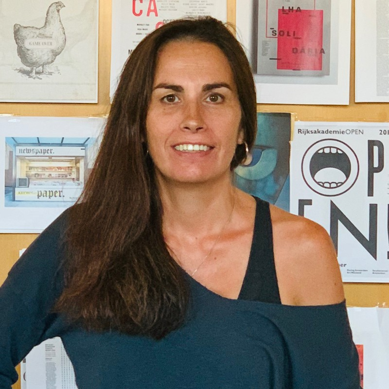
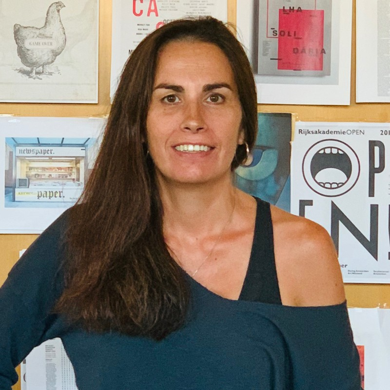

Sonia Matos
 

Da tesoura e cola na mão no Jornal de Leiria ao redesenho do site do PÚBLICO. São 21 anos que separam estes dois momentos fundamentais na minha carreira. Foi no Jornal de Leiria que paginei pela primeira vez. Era tempo da cola de spray que deixava os sapatos colados ao chão. Depois foi hora de rumar a Lisboa, onde me formei em Design de Comunicação no Instituto de Artes Visuais, Design e Marketing (Iade). No 1º ano do curso, fui trabalhar para o Diário de Notícias. Mas foi n’ O Independente que cresci. Foram oito anos e alguns prémios da Society for News Design (SND) . Vim para o PÚBLICO em 2006 redesenhar o jornal com os designers Mark Porter e Simon Esterson. Ganhamos o Lápis Amarelo da D&AD e outros prémios da SND. E o P em vermelho veio para ficar. Finalmente a passagem para o digital: os sites Fugas e Life&Style, a aplicação do Ípsilon para tablets e agora o redesenho de todo o site. Ao longo destes anos fui júri em concursos de design nacionais e internacionais. E há pouco redesenhei o Jornal de Leiria. Afinal foi onde tudo começou